About Me

*Raps about myself and my wide variety of epic skills and talents and how cool and funny everybodty thinks I am* (this is a placeholder image guys i promise)
Projects
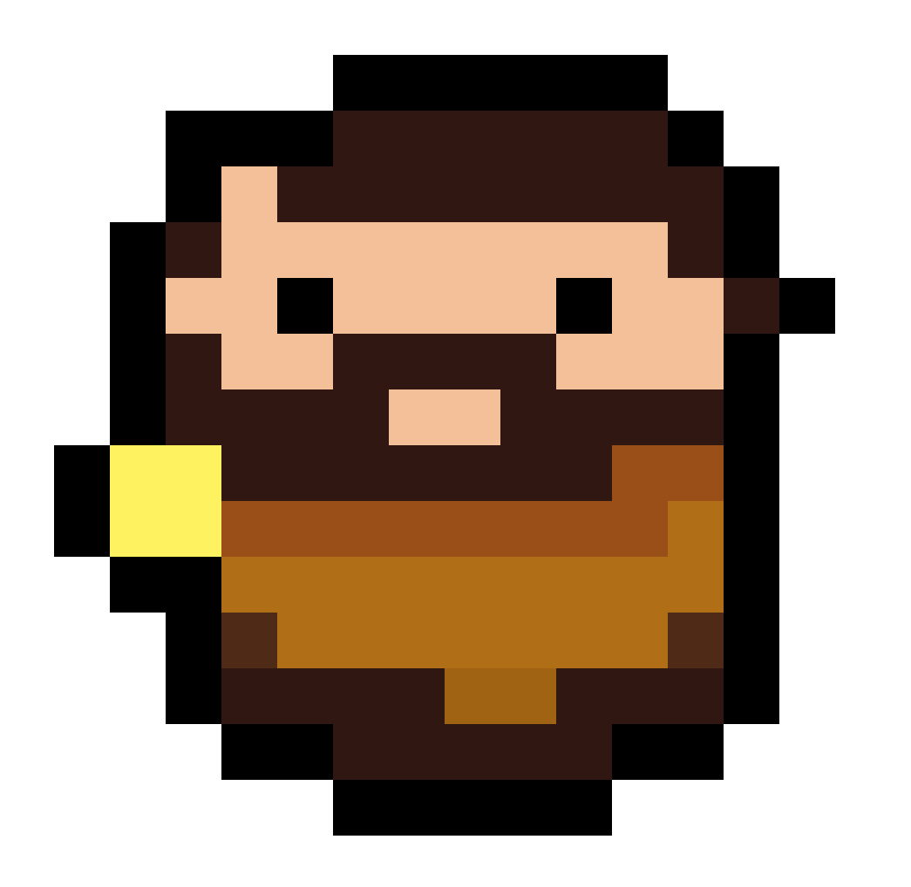
Balldyseus
2024 (WIP)
Solo-Game
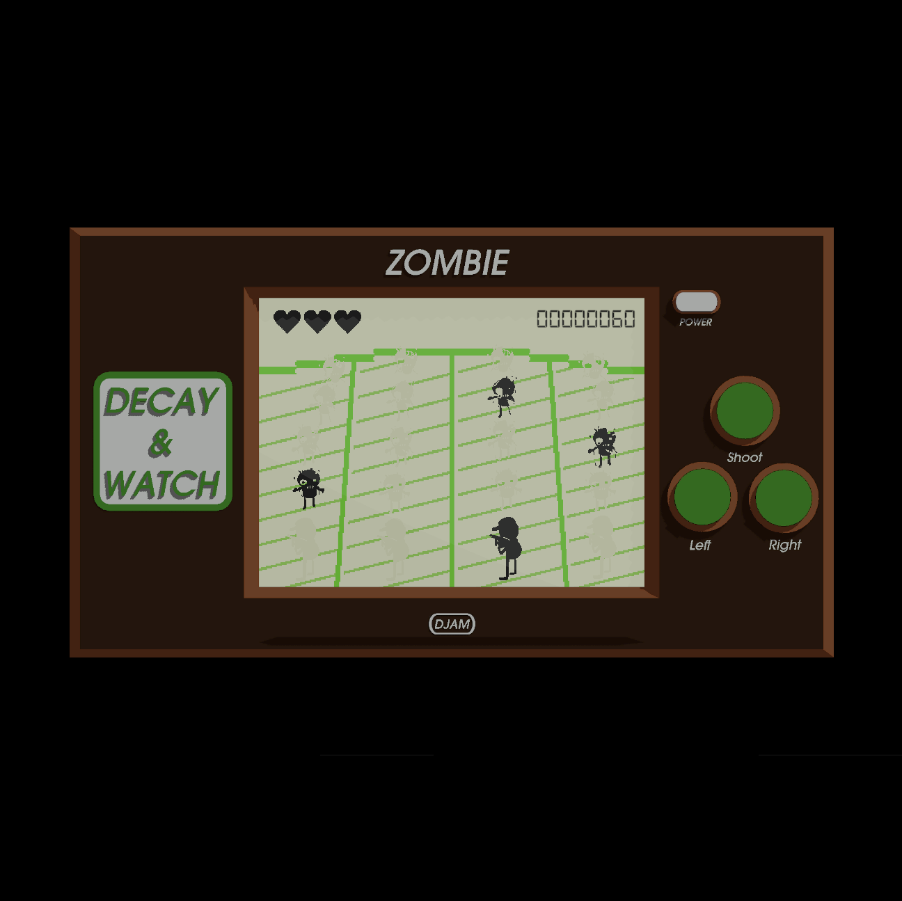
Decay & Watch
2024
Discord's Decay-Themed Game Jam
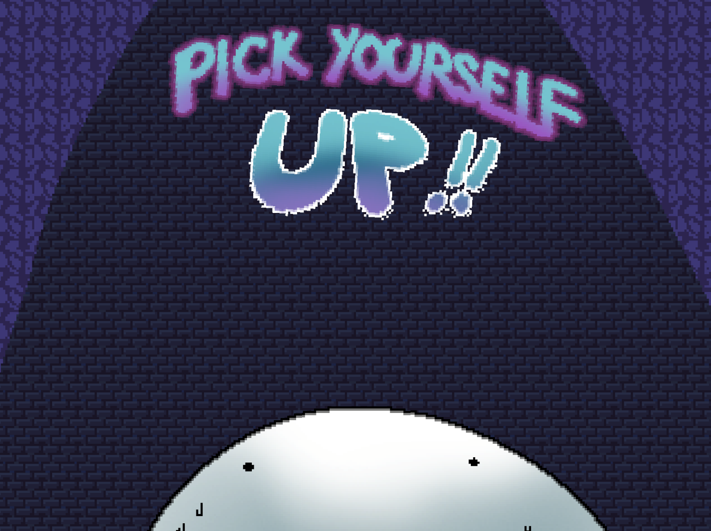
Pick Yourself Up
2024
Mental-Health-Themed Game Jam
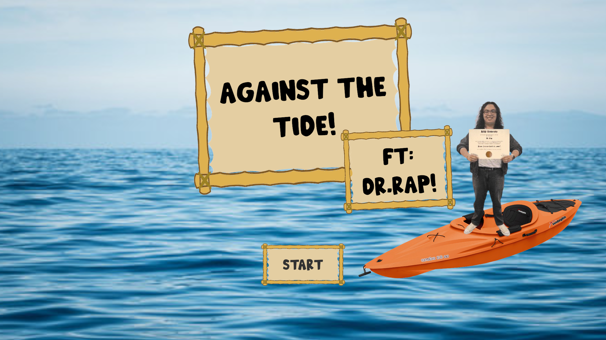
Against The Tide! (Ft: Dr.Rap)
2024
Water-Themed Game Jam
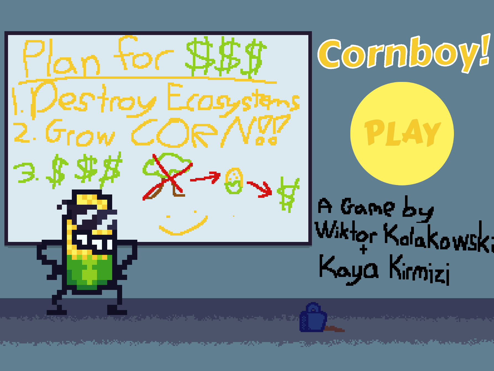
Cornboy
2024
IndieCade's Climate Jam Internship
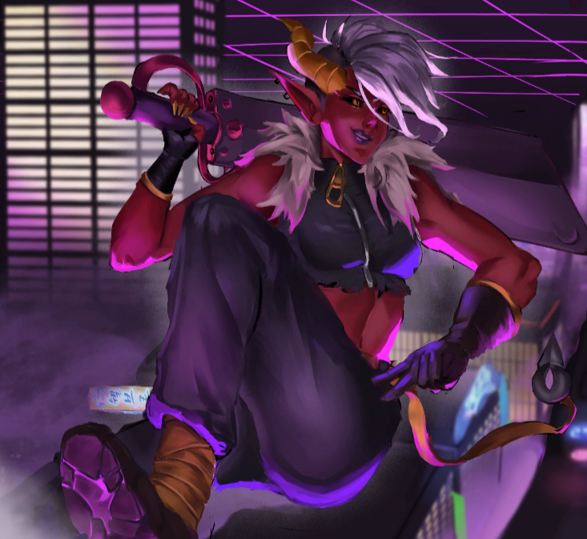
Striking Hell
2023 - 2024
Studio Aspen
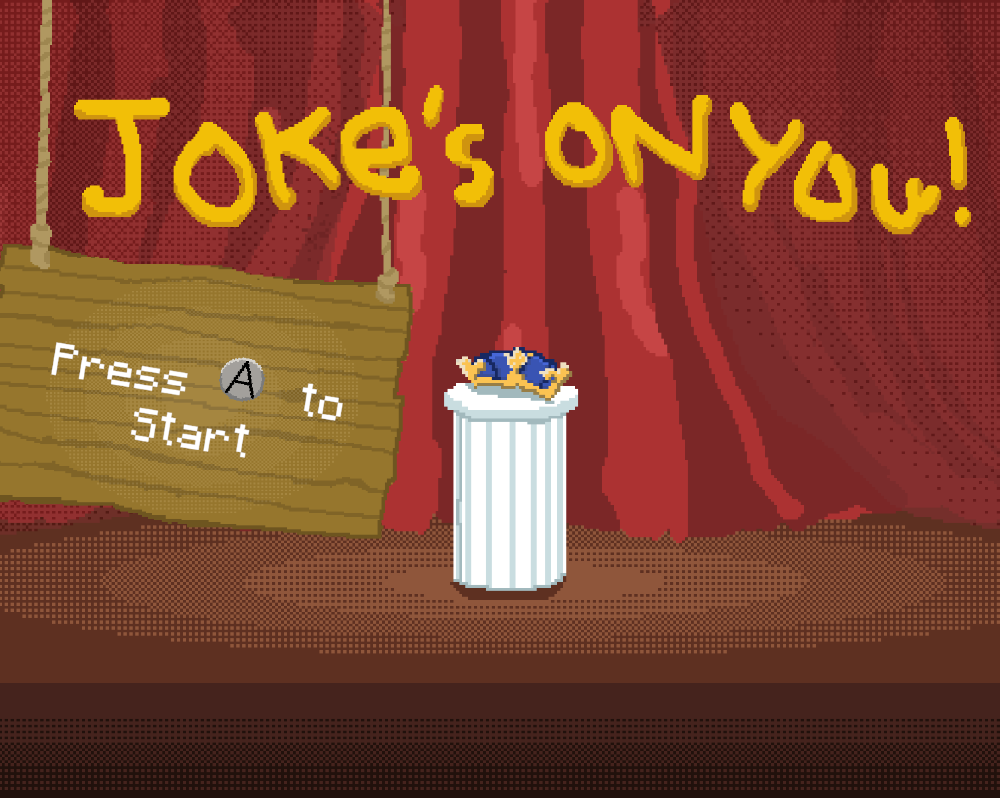
Joke's On You!
2024
Global Game Jam @ NYU Game Center
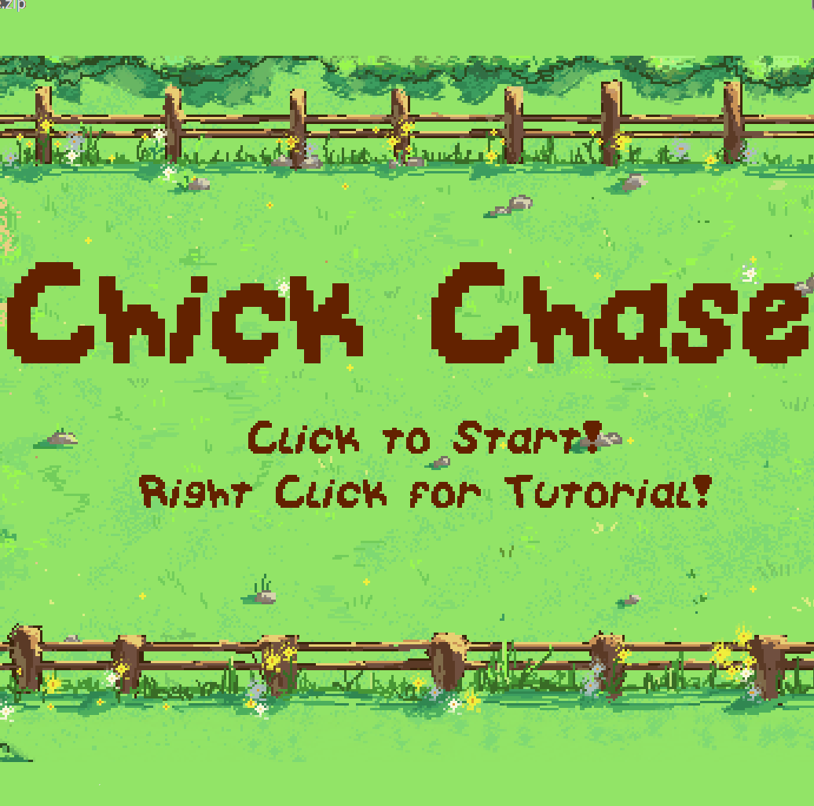
Chick Chase
2023
Unthemed Game Jam
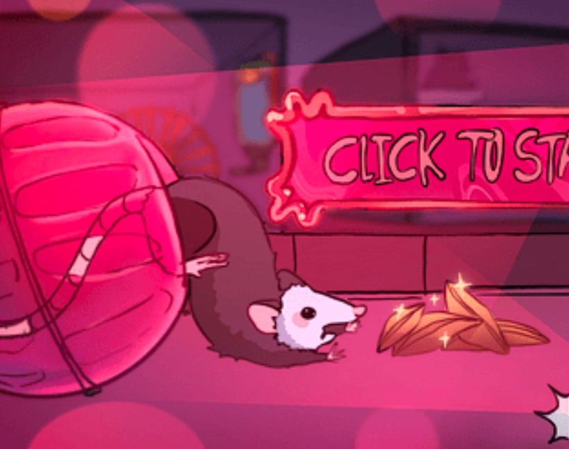
Opossum Ops
2023
Unthemed Game Jam
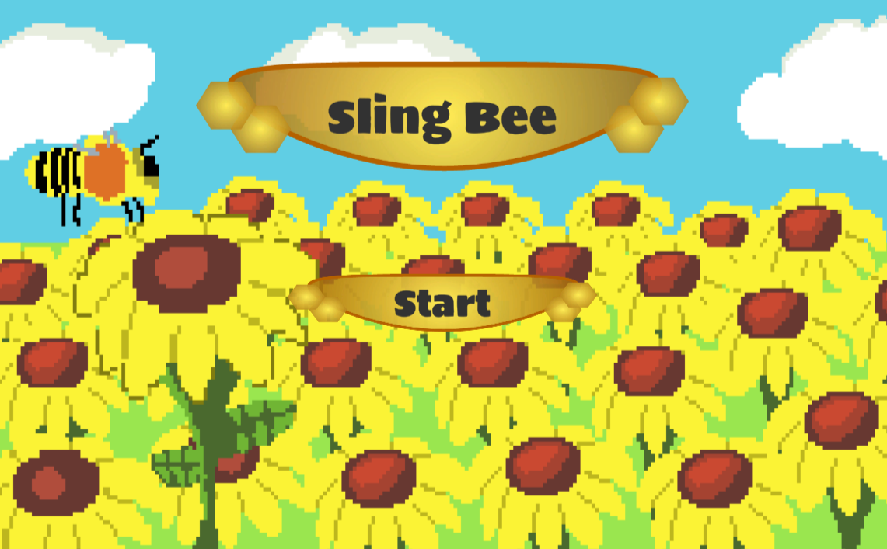
Sling Bee
2023
Bee-themed Game Jam

Refold
2023
EGD's EXP Program
Experience/Education
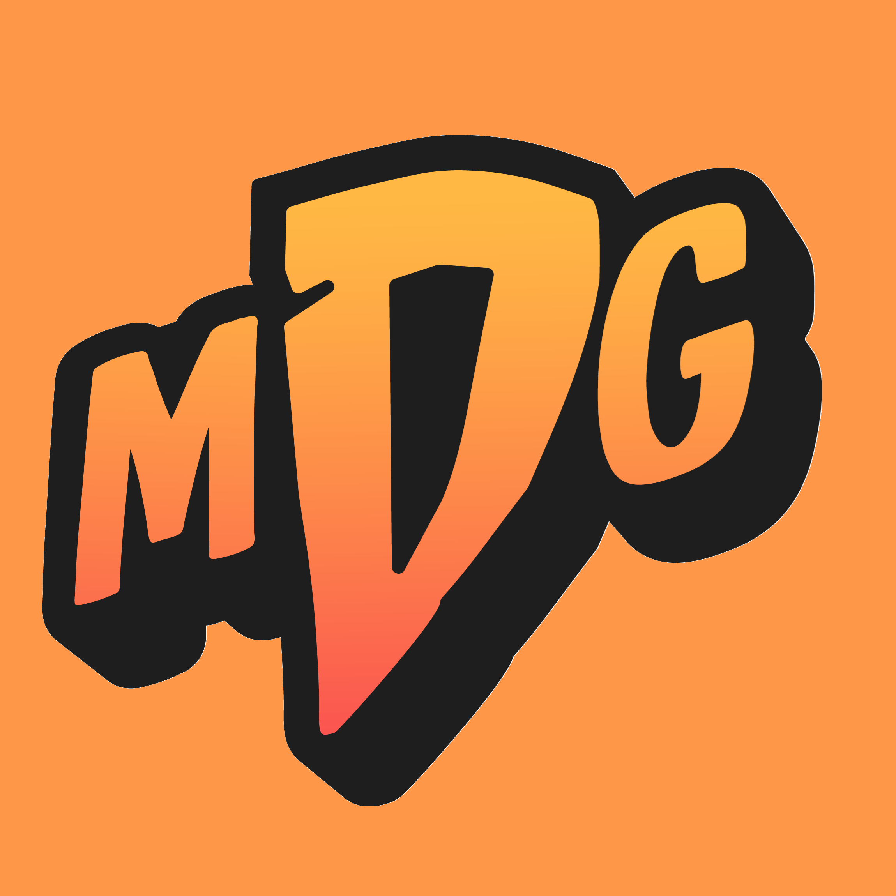
Most Dangerous Games
Summer 2024
Programming Intern
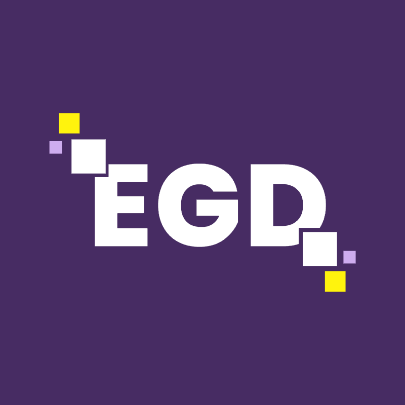
EGD Collective
2022 - ????
Games Studio Program
Education
CUNY BA '2026
Game Programming & Design
Links
*Raps About My LinkedIn, Resume, itch.io, Email and whatever other links*
×